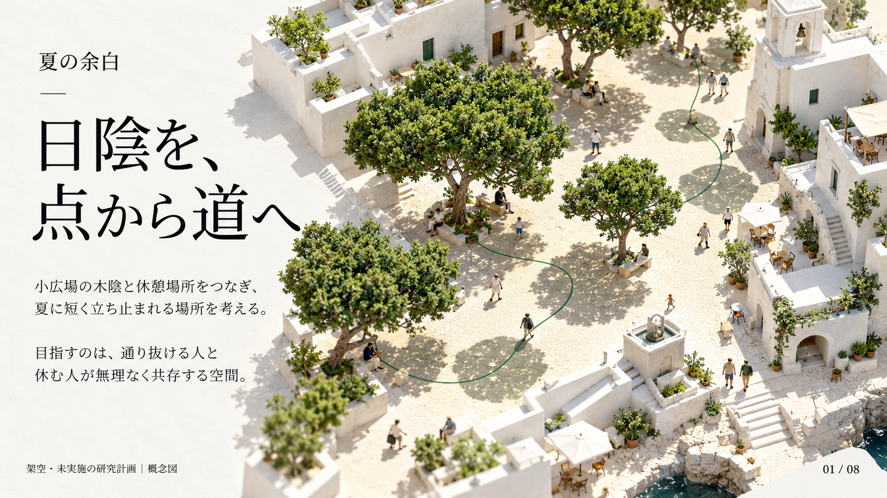
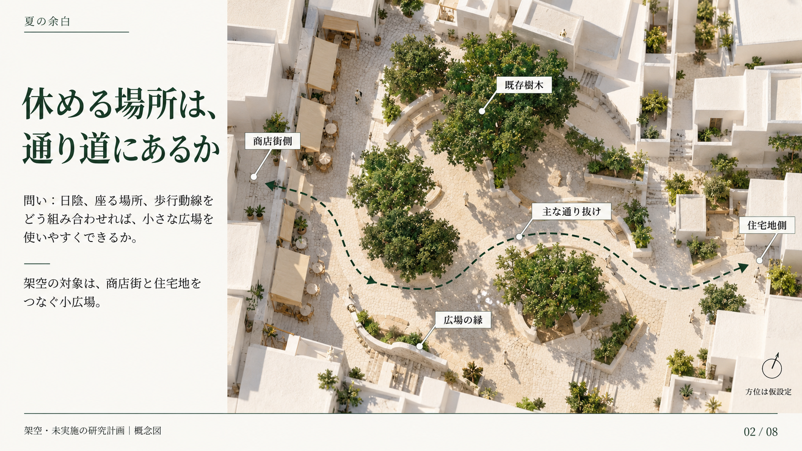
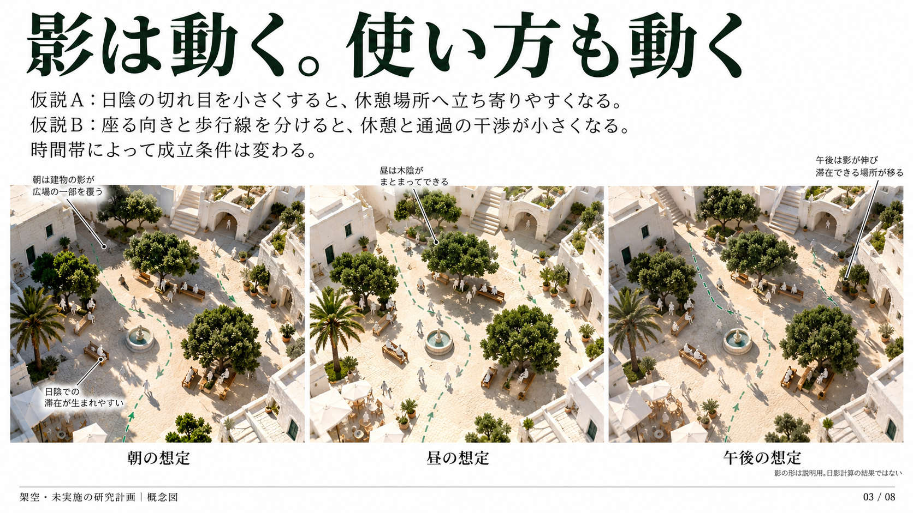
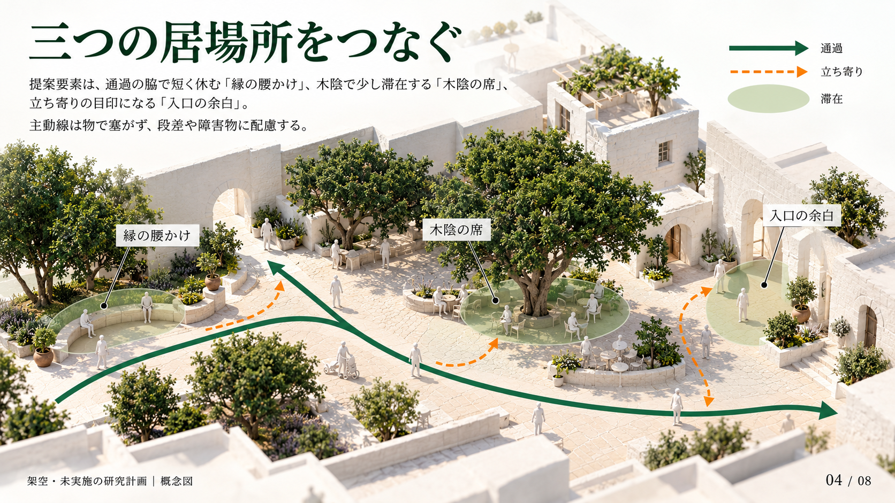
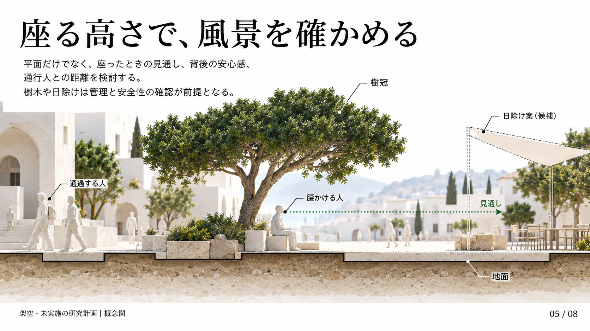
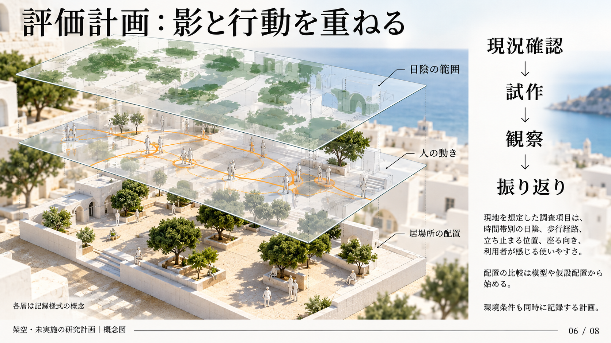
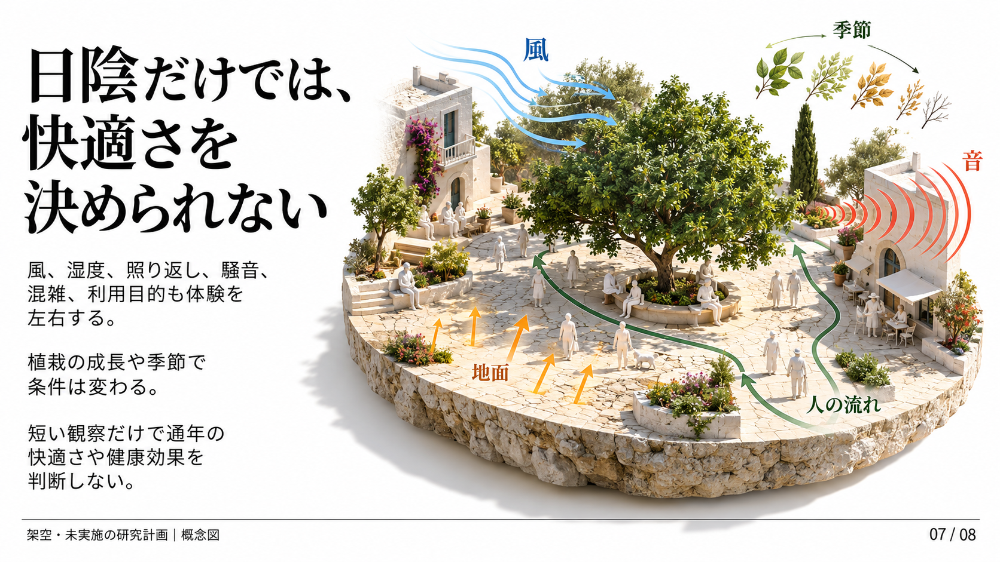
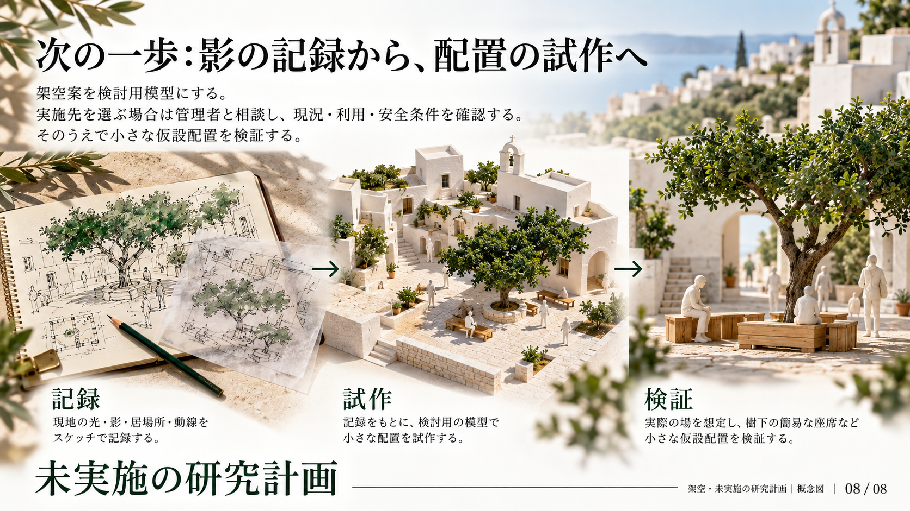

架空・未実施のデザイン研究。画像主体PPTX、話者ノート編集可。プレビューはPPTX内の画像とバイト一致した生成PNGで、PPTXレンダリングではありません。
PowerPoint
暑さを解決できると断言せず、日陰と動線の配置を検討する計画として紹介する。

敷地条件は説明用。現地で取り組む際は樹木、地面、周辺建物、管理条件を調べ直す。

静止した一枚の平面図だけでは見えない変化を扱う。実際の影は現地確認と計算で確かめる必要がある。

日陰を追うことと、誰でも通れることは両立させる。通路幅などの具体条件は実施設計時に確認する。

見通しを失わずに落ち着ける場所を探る。設備の構造、安全、管理は専門的な確認が必要。

観察記録に個人を特定できる情報を残さない。夏の現地調査は暑さへの安全対策を整えてから行う。

要因を分けて記録し、配置による影響と天候の影響を混同しない。

完成形を先に決めず、影と人の動きを読みながら設計を更新する。